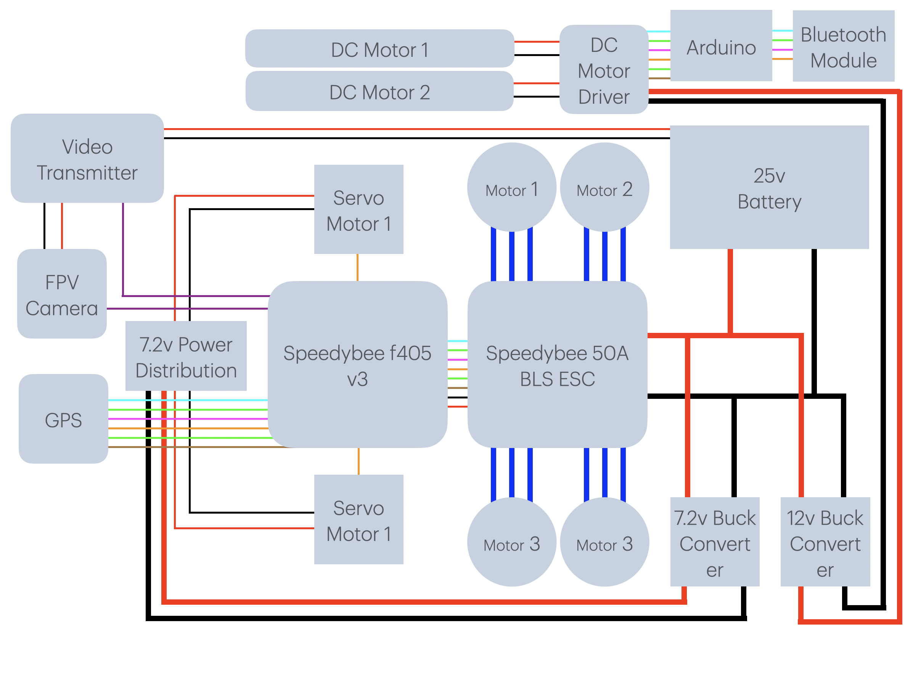
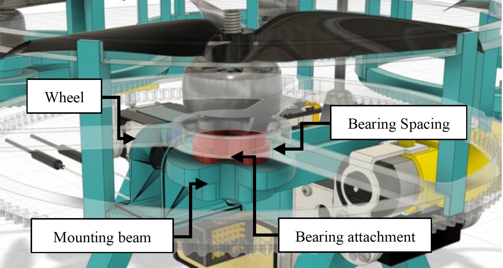

RECONFIGURABLE UAV + UGV
This project draws inspiration from the CalTech M4 Morphbot and is designed to operate in two configurations: UAV (Unmanned Aerial Vehicle) and UGV (Unmanned Ground Vehicle). Its primary purpose is to navigate environments where traditional ground robots face limitations. With a focus on search and rescue operations, this robot can autonomously fly to designated search locations for rapid response. Equipped with GPS and telemetry, it enables real-time navigation and monitoring from the ground station. In complex terrains, the UAV seamlessly transitions into a UGV, enhancing maneuverability while significantly reducing power consumption by shifting from a dynamically stable system to a statically stable one. Additionally, the robot features an FPV camera and a video transmitter, allowing live video feeds to be relayed to the ground station for enhanced monitoring and manual control.
SYSTEM OVERVIEW
The drone can switch between aerial mode and ground mode. It possesses a total of 8 actuators which includes 2 DC motors
which is used for actuating wheels in UGV mode, 2 servo motors which aids in reconfiguration process from UGV to UAV vice versa, 4 BLDC motors for actuating in UAV mode.
The drone weights approximately 1.2 kg with all components including electronics. The Drone measures 310 mm in length and 230 mm in height. Wheel has a diameter of 150 mm.
motor mount (horizontal dist.) And diagonal wheelbase distance is 225mm. To prevent propeller collisions, we must have safe spacing between two propellers. Considering this factor the propeller clearance is taken as 33mm. The landing gear is 50mm in height which is providing us the required ground clearance and the design. It is designed to be smaller than the radius of the outer wheel thus not disturbing the ground motion. There is a clearance of 15 mm between the landing gear and the ground during the ground motion.
The chassis structures are primarily 3D printed using PLA+ and Carbon fibre is used in centre part of the chassis for its light weight properties.
SYSTEM ARCHITECTURE
A 1200 VTL 5MP camera is used to provide live first person view footage with video being transmitted to the ground station through a 5.8GHz frequency band. A STM32F405 arm microcontroller used as the controller for flight, enabled with 6 UART for peripherals. For motion in the Ground, an Atmega328 based board is used. A common Ground control station enabled with a First person View Display, Video Receiver and Radio controls. A 4 in 1 integrated 55A Electronics speed controlled is used thus drastically reducing the weight to 15g. DPS310 Barometer is used to maintain constant altitude for altitude hold mode. In order to maintain precise position, Ublox NEO-M8N is used for GPS positioning and Navigation having accuracy between 0.6 and 0.9 meters, connected to the Flight controller’s UART6. A compass module is used to guide the direction for navigation between waypoints and is connected to the flight controller through I2C protocol. A 2.4GHz receiver is connected to UART2 of the flight controller following the SBUS protocol. Battery and Power Management The X is designed to maintain battery efficiency along with a decent flight time. Thus a 1350mAH lithium ion battery is used for its weight factor. A 6 cell battery is used thus providing 25.2 volts to the electronics speed controlled as required. It is step downed to 12 volts using a LM2596S Buck converter to H-Bridge Motor driver for Ground Drive. A secondary XL4005 Buck converter is used to convert the Battery supply to 7.2 volts with constant 5A as per the Servo motor requirement.
STRUCTURAL DESIGN
The frame mainly comprises of 3 major structural design. The central body, the motor mount beams, wheels. The central body is designed to encompass the flight controller along with other electronics. Being at the centre, in order to maintain the most perfect centre of gravity, the battery is secured to the central body. The Motor mount beams run parallel to the central body in both the sides. They are connected by the servo motor’s attachment. These are designed to secure the motor at the same time provide structural stability due to the vibrations by the motor. The mounting holes are further connected to a bearing attachment which secures the bearing’s inner surface as shown in fig.
The Wheel and the beam is connected through bearing in order to prevent friction during ground motion. Since two wheels are to be driven through a single DC motor, a common gear is used to drive the gears in each wheel. Therefore Wheels are designed integrating gear teeth's to the outer structure, achieving a gear ratio of 1:10 therefore having a higher torque to driving the structure in the compromise of speed. The Wheels are topology optimised in order to reduce material maintaining the structural stability at the same time reducing drag created by the structure.